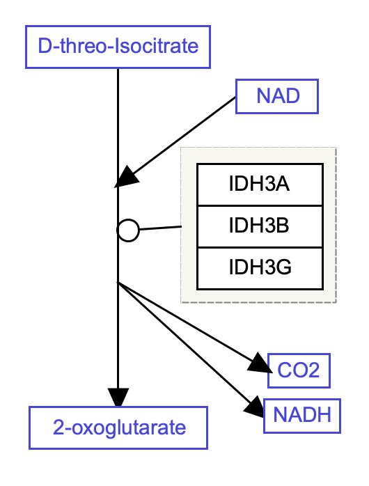

Background
A cofactor is a non-protein chemical compound or metallic ion that is required for an enzyme's activity as a catalyst, and is essential for the enzyme's proper functioning. Cofactors can be considered "helper molecules" that assist in biochemical transformations. They are often required for the stability and function of enzymes and significantly influence the enzyme's ability to catalyze its reaction. Source: Wikipedia.
Your Mission
Draw the oxidation of isocitrate to 2-oxoglutarate, with the cofactor NAD. This is a step in the TCA cycle.
- Download the starter pathway here: draw-cofactor-reaction-start.gpml.
- Launch PathVisio and open the dowloaded file via File > Open.
- Add the gene products that catalyze the conversion; IDH3A, IDH3B and IDH3G.
- Group the three enzyme nodes.
- Right-click on the existing conversion interaction and select Add anchor, or select the conversion interaction and then use the keyboard shortcut Ctrl+R (Command+R on Mac), to add the anchor.
- Select the Catalysis arrow from the MIM interactions palette in the Objects tab and place the interaction anywhere on the drawing board.
- Drag the plain end (start) of the interaction over a target area on the groupp of enzyme nodes.
- Drag the catalysis end (end) of the interaction over the anchor on the conversion line.
- Add another anchor to the conversion reaction, positioned above the previous anchor.
- Add the NAD node using a Metabolite node.
- Select the Conversion arrow from the MIM interactions palette in the Objects tab and place the interaction anywhere on the drawing board.
- Drag the plain end (start) of the interaction over a target area on the NAD node.
- Drag the conversion end (end) of the interaction over the new anchor on the conversion line.
- Repeat the last steps to add two more metabolite nodes for CO2 and NADH and their interactions.
- Done!
- Save your work as a GPML file under File > Save As.
- Drag-and-drop the GPML file below to check if it is correct.